Dutch Queer Scene
and its Beauty
Een doorlopend fotografieproject dat de diverse en levendige queer scene in Nederland documenteert. Gefotografeerd in Rotterdam, Spijkenisse, Maastricht, Utrecht en Amsterdam, leggen de beelden drag queens, kings, pups en andere gemeenschappen vast die de Nederlandse queer wereld vormen.
Het project ontstond uit een samenwerking met het Stadsarchief Rotterdam, met een simpel doel als kern: zichtbaarheid geven aan stemmen en gezichten die ondervertegenwoordigd blijven in de reguliere media. Dit is een momentopname van het werk tot nu toe. Het is een doorlopend archief dat nog steeds wordt opgebouwd, gemeenschap voor gemeenschap.

Drag & Performance
28 afbeeldingen


Met onder anderen Hyon Metz, Rox Monroe en Faye Ferry.
Scene & Community
20 afbeeldingen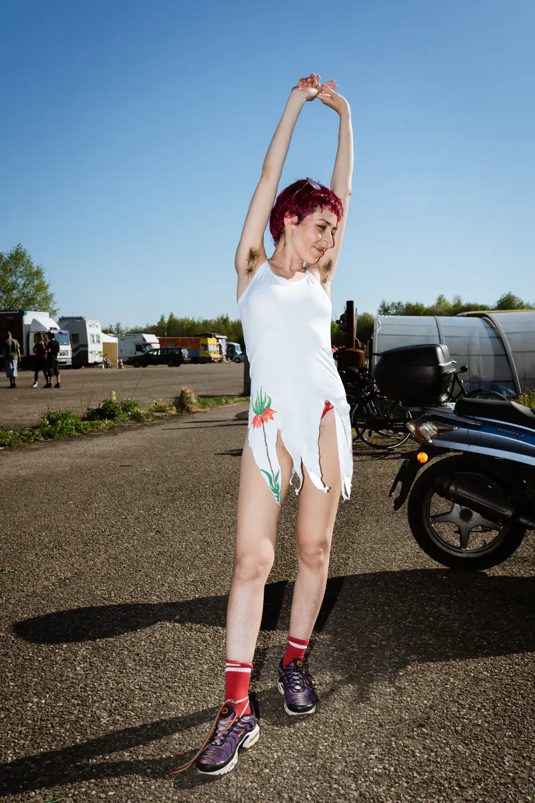
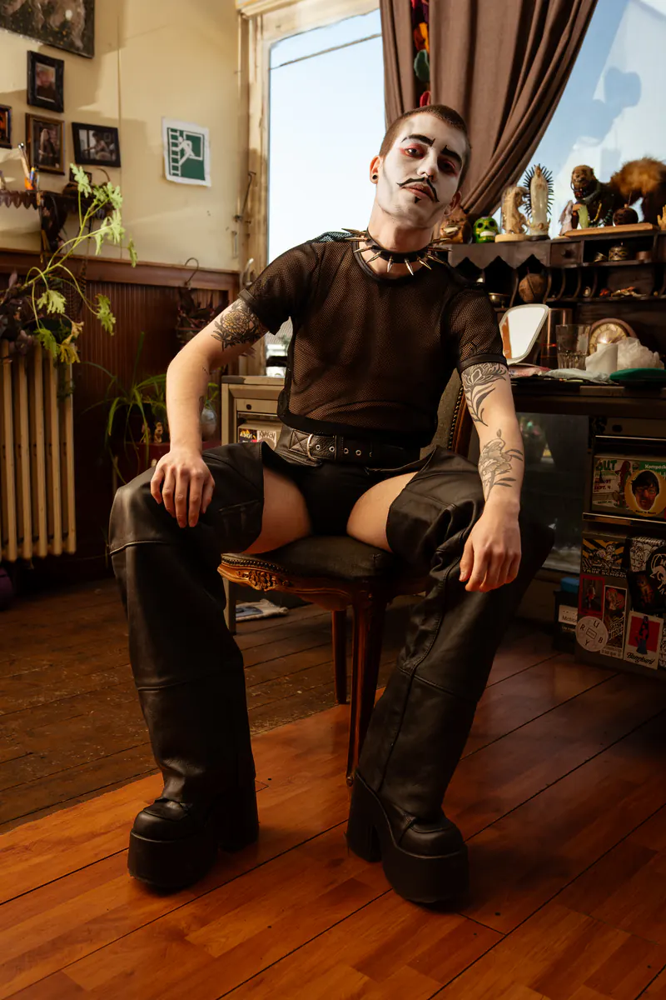
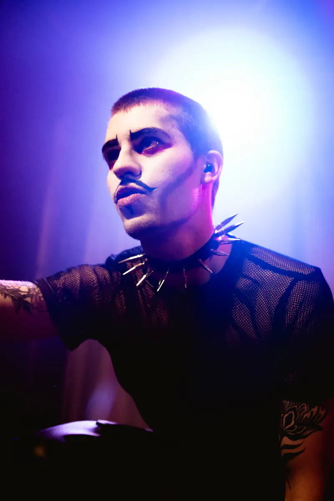
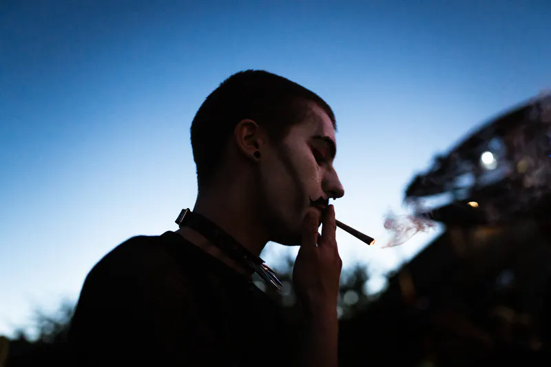
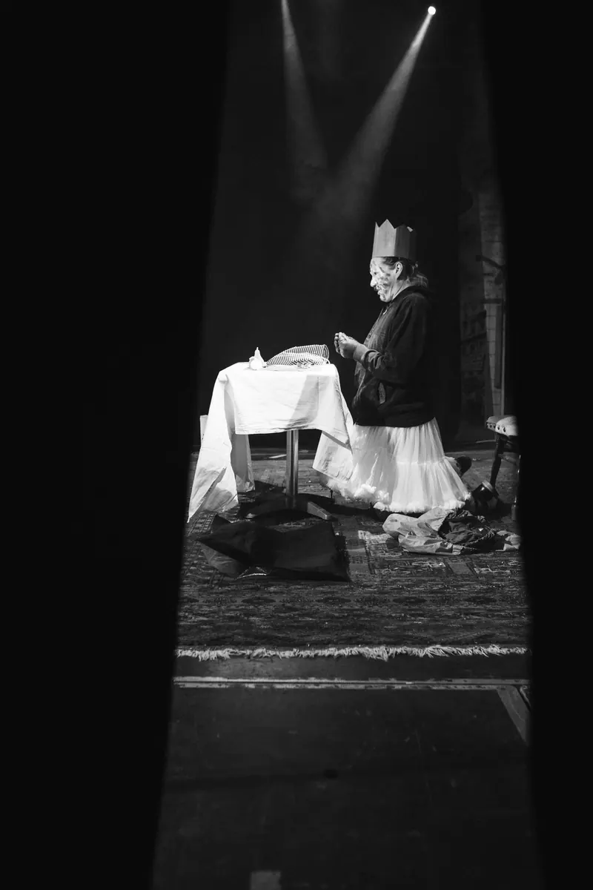
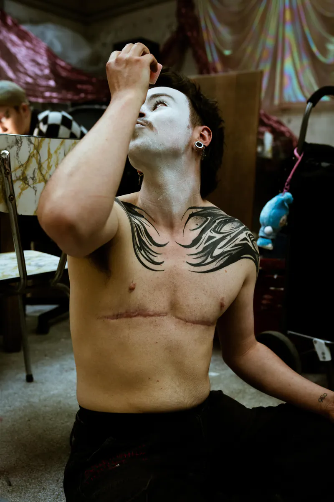
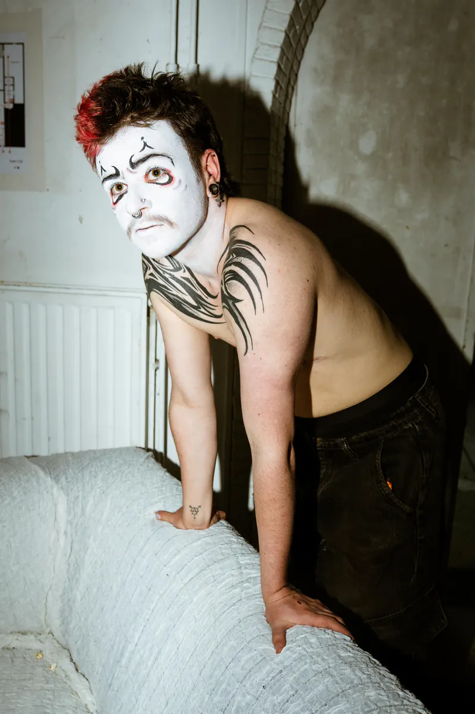
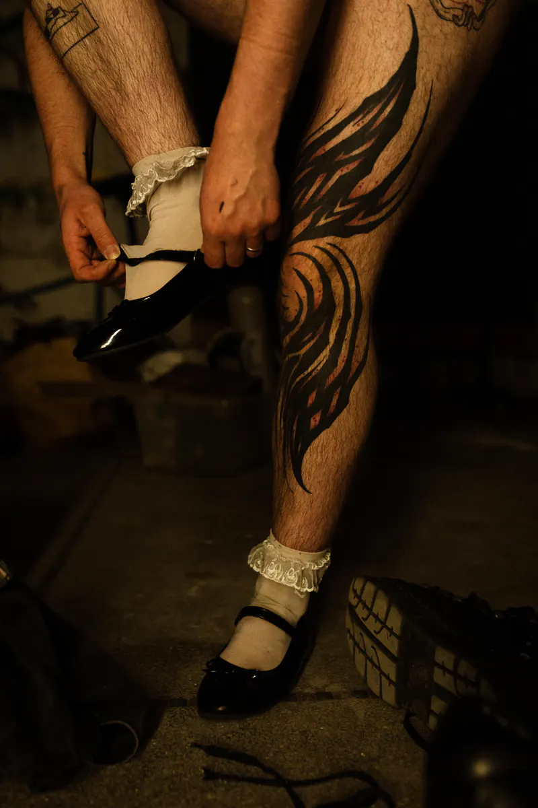
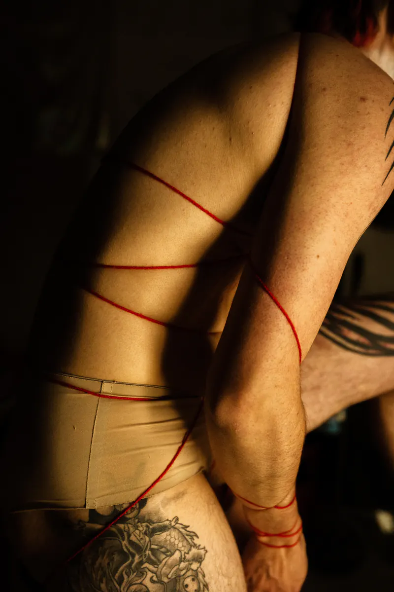
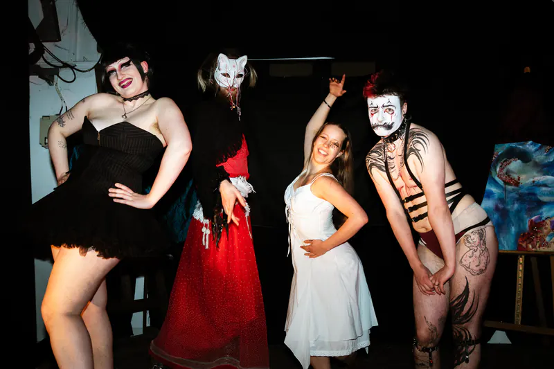
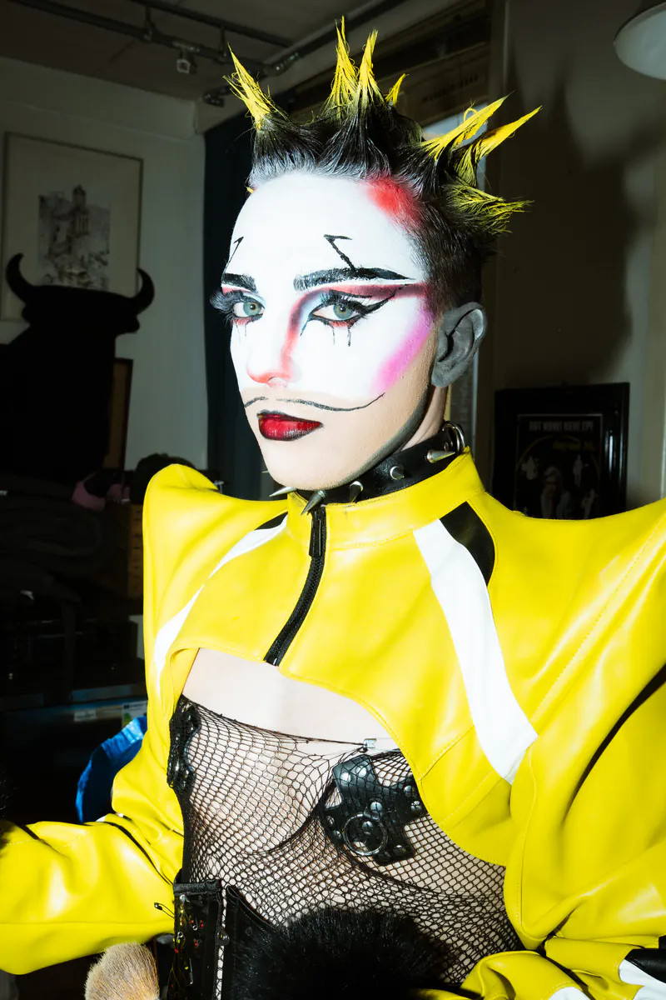
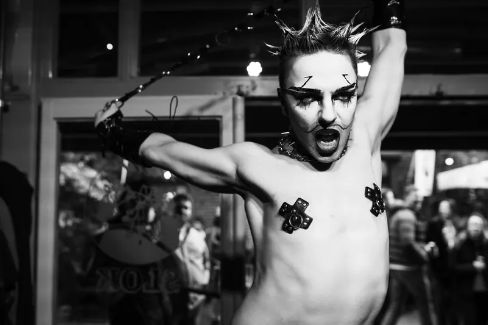
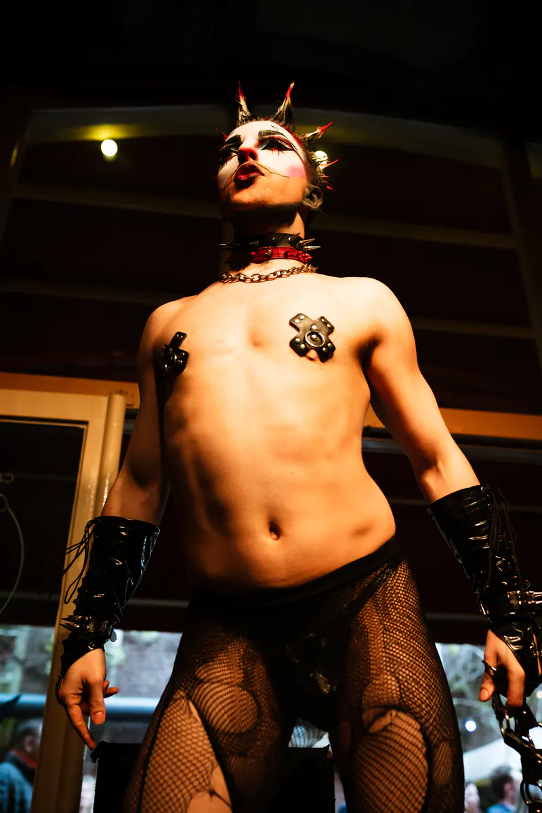
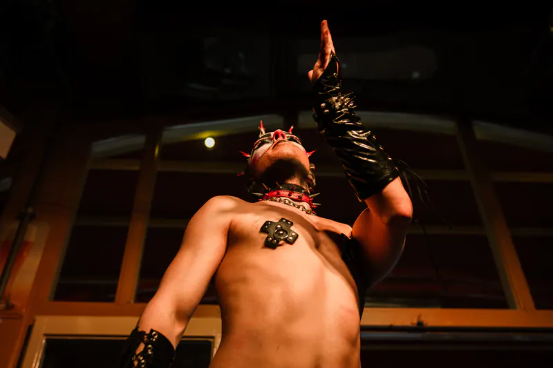
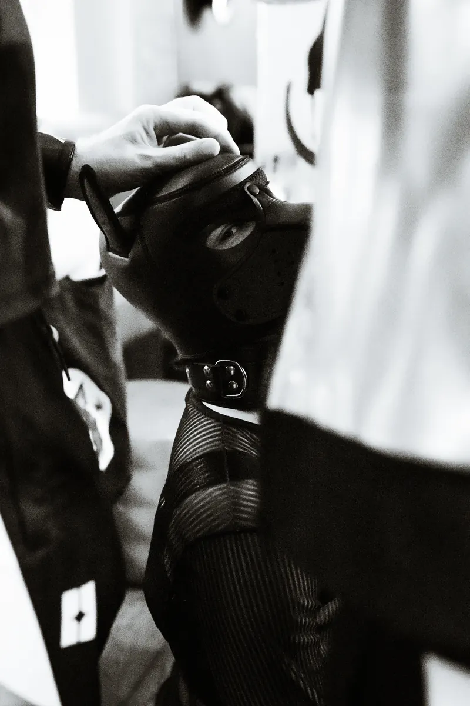
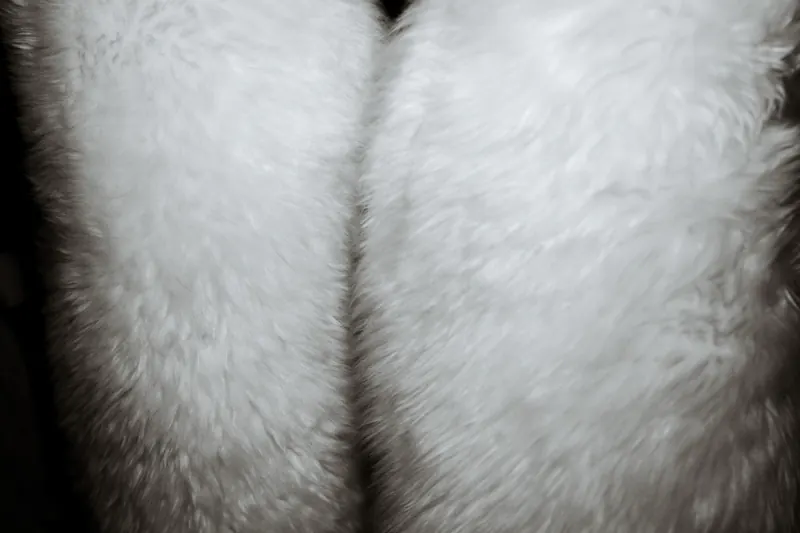
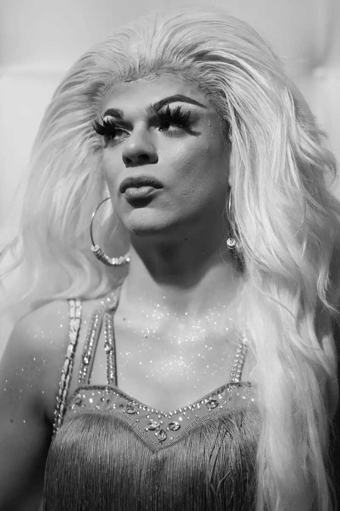
Met onder anderen Agnes Eunucha, Dainius, Dice Spiders, Felicity Elixir, Hehe, Neo Obscura, Nila, Punny drag name, Rusty Knife, Santo Claus, Shrimp Shady en Sybil.